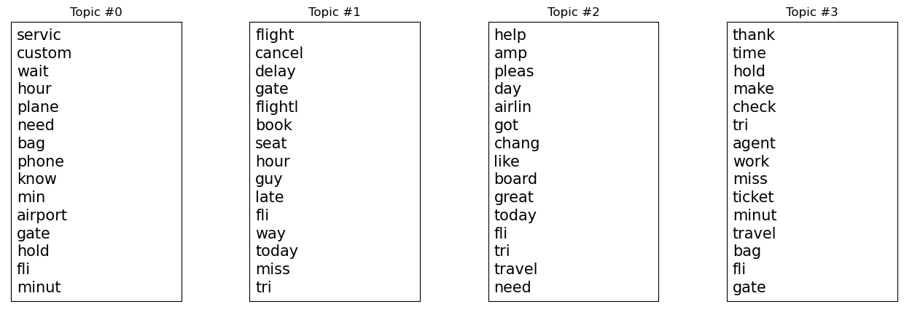

Latent Dirichlet Allocation
Overview
Topic modeling is a natural language processing (NLP) technique that aims to discover underlying topics or themes present in a collection of text documents.
It is particularly useful for organizing, summarizing, and understanding large textual datasets. One popular method for topic modeling is Latent Dirichlet Allocation (LDA).
Topic modelling could help us discover the main topics or themes that customers frequently discuss in their tweets related to air travel.
These topics could include aspects such as flight experiences, customer service, delays, in-flight amenities, booking process, etc.
It could uncover customer preferences by identifying topics related to specific amenities, services, or features that customers value in airlines.
Data Prep
A count vectorizer is a common tool used to convert a collection of text documents into a numerical format suitable for machine learning algorithms.
The result of applying a count vectorizer is typically a sparse matrix that represents the word occurrences in the documents. The same technique is used to preprocess tweets data to get:

Link to the data
Code
Here is the code to create count vectorizer data from sentences and then implement LDA on it.
Results
Let's take a look at the topics:
Let's take a look at the word distribution for each topic:
Conclusion
The above analysis is conducted on 4 topics. Out of those, topic number 3 corresponds to the words such as "thank" and "agent". The topic could be correlated with those data points where the customers faced a problem which was then solved by the airlines to maintain customer sentiment. Whereas, topic number 1 corresponds to words such as "flight cancel", "late" indicating negative customer sentiment.